第 4 章 数据表示与特征工程#
本章解决：机器学习算法只吃数字，但现实数据不是——"职业"是字符串、"小时"是整数编码的类别、租车量是带周期的时间序列。这一章讲特征工程（feature engineering）：如何把数据变换成对特定模型"好用"的表示（one-hot 编码、分箱、交互特征、多项式特征、log 变换），以及如何从一堆特征里挑出真正有用的那部分（单变量统计、模型选择、RFE）。 前三章你学的是"算法怎么工作"，这一章是分水岭：用正确的方式表示数据，对监督模型性能的影响比调参数还要大。学完本章再看第 5 章的模型评估与调参，工具箱就齐了。
到目前为止，我们一直假设数据是由浮点数组成的二维数组，其中每一列是描述数据点的连续特征（continuous feature）。对于许多应用而言，数据的收集方式并不是这样。一种特别常见的特征类型就是分类特征（categorical feature），也叫离散特征（discrete feature）——这种特征通常并不是数值。
分类特征与连续特征之间的区别，类似于分类和回归之间的区别，只是前者发生在输入端而不是输出端。我们已经见过的连续特征例子包括像素明暗程度和花的尺寸测量；分类特征的例子包括产品的品牌、产品的颜色或产品的销售部门（图书、服装、硬件）。这些都是描述一件产品的属性，但它们不以连续的方式变化：一件产品要么属于服装部门，要么属于图书部门，在图书和服装之间没有中间部门，不同的分类之间也没有顺序（图书不大于服装也不小于服装，硬件不在图书和服装之间）。
无论你的数据包含哪种类型的特征，数据表示方式都会对机器学习模型的性能产生巨大影响。第 2 章和第 3 章已经看到数据缩放的重要性——用厘米还是英寸表示测量数据，结果会不同；用额外的特征**扩充（augment）**数据（比如添加交互项或多项式）也很有帮助。
对于某个特定应用来说，如何找到最佳数据表示，这个问题就被称为特征工程（feature engineering），它是数据科学家和机器学习从业者在尝试解决现实世界问题时的主要任务之一。**用正确的方式表示数据，对监督模型性能的影响比所选择的精确参数还要大。**本章将首先学习分类特征这个非常重要而又非常常见的例子，然后对于特征和模型的特定组合给出一些有用的变换示例。
4.0 本章导图#
4.1 分类变量#
作为例子，我们将使用美国成年人收入的数据集 adult，该数据集是从 1994 年的普查数据库中导出的。任务是预测一名工人的收入是高于 50 000 美元还是低于 50 000 美元——这是一个二分类任务（也可以预测具体收入，那样就变成了回归任务，但问题更难，而且理解 50K 这条分界线本身也很有趣）。数据集的特征包括工人的年龄、雇用方式（独立经营、私营企业员工、政府职员等）、教育水平、性别、每周工作时长、职业，等等。表 4-1 给出了该数据集中的前几个条目：
| age | workclass | education | gender | hours-per-week | occupation | income | |
|---|---|---|---|---|---|---|---|
| 0 | 39 | State-gov | Bachelors | Male | 40 | Adm-clerical | <=50K |
| 1 | 50 | Self-emp-not-inc | Bachelors | Male | 13 | Exec-managerial | <=50K |
| 2 | 38 | Private | HS-grad | Male | 40 | Handlers-cleaners | <=50K |
| 3 | 53 | Private | 11th | Male | 40 | Handlers-cleaners | <=50K |
| 4 | 28 | Private | Bachelors | Female | 40 | Prof-specialty | <=50K |
| 5 | 37 | Private | Masters | Female | 40 | Exec-managerial | <=50K |
| 6 | 49 | Private | 9th | Female | 16 | Other-service | <=50K |
| 7 | 52 | Self-emp-not-inc | HS-grad | Male | 45 | Exec-managerial | >50K |
| 8 | 31 | Private | Masters | Female | 50 | Prof-specialty | >50K |
| 9 | 42 | Private | Bachelors | Male | 40 | Exec-managerial | >50K |
| 10 | 37 | Private | Some-college | Male | 80 | Exec-managerial | >50K |
在这个数据集中，age（年龄）和 hours-per-week（每周工作时长）是连续特征，我们知道如何处理；但 workclass（工作类型）、education（教育程度）、gender（性别）、occupation（职业）都是分类特征——它们都来自一系列固定的可能取值（而不是一个范围），表示的是定性属性（而不是数量）。
假设我们想在这个数据上学习一个 Logistic 回归分类器。第 2 章学过，Logistic 回归利用下列公式进行预测，预测值为 \(\hat{y}\)：
其中 \(w[i]\) 和 \(b\) 是从训练集中学到的系数，\(x[i]\) 是输入特征。当 \(x[i]\) 是数字时这个公式才有意义——但如果 \(x[2]\) 是 "Masters" 或 "Bachelors" 的话，这个公式则没有意义。显然，在应用 Logistic 回归时，我们需要换一种方式来表示数据。
4.1.1 One-Hot编码（虚拟变量）#
到目前为止，表示分类变量最常用的方法就是 one-hot 编码（one-hot-encoding）或 N 取一编码（one-out-of-N encoding），也叫虚拟变量（dummy variable）。背后的思想：将一个分类变量替换为一个或多个新特征，新特征取值为 0 和 1。对于线性二分类（以及 scikit-learn 中其他所有模型）的公式而言，0 和 1 这两个值是有意义的，我们可以对每个类别引入一个新特征，从而表示任意数量的类别。
比如 workclass 的可能取值包括 "Government Employee"、"Private Employee"、"Self Employed" 和 "Self Employed Incorporated"。为了编码这 4 个可能的取值，我们创建 4 个新特征（名字与类别相同）：如果一个人的 workclass 取某个值，那么对应的特征取值为 1，其他特征均取值为 0。对每个数据点来说，4 个新特征中只有一个的取值为 1——这就是"one-hot / N 取一"名字的由来。原理见表 4-2。在机器学习算法中使用此数据时，我们会删除原始的 workclass 特征，仅保留 0-1 特征。
| workclass | Government Employee | Private Employee | Self Employed | Self Employed Incorporated |
|---|---|---|---|---|
| Government Employee | 1 | 0 | 0 | 0 |
| Private Employee | 0 | 1 | 0 | 0 |
| Self Employed | 0 | 0 | 1 | 0 |
| Self Employed Incorporated | 0 | 0 | 0 | 1 |
侧栏：one-hot 编码与统计学的虚拟编码 我们使用的 one-hot 编码与统计学中使用的虚拟编码（dummy encoding）非常相似，但并不完全相同。为简单起见，这里将每个类别编码为一个不同的二元特征。在统计学中，通常将具有 \(k\) 个可能取值的分类特征编码为 \(k-1\) 个特征（全部等于零表示最后一个可能取值）。这么做是为了简化分析（更专业的说法是，这可以避免使数据矩阵秩亏）。
拓展：为什么统计学要少编一列，机器学习却不在乎
把 \(k\) 个 0-1 列全保留，它们每行恰好加起来等于 1——这和"常数列 1"（截距 b 对应的那一列）线性相关，数据矩阵不满秩，系数在数学上不唯一（多重共线性）。统计推断要报告每个系数的显著性和解释，所以必须砍掉一列做基准。而机器学习预测只关心 \(\hat{y}\) 的输出值，正则化（Ridge/Lasso）会自动把冗余的权重摊开或压小，满秩与否不影响预测，因此 sklearn 一族都痛快地保留全部 \(k\) 列——代价只是模型多 \(k\) 个可解释性"分不清归属"的参数。
将数据转换为分类变量的 one-hot 编码有两种方法：一种是使用 pandas，一种是使用 scikit-learn。在写作本书时，使用 pandas 要稍微简单一些，所以先选这种方法。用 pandas 从逗号分隔值（CSV）文件中加载数据：
# ===== 书 4.1.1 节：用 pandas 加载 adult 数据集 =====
import pandas as pd
from IPython.display import display
# 文件中没有包含列名称的表头，因此我们传入 header=None
# 然后在 "names" 中显式地提供列名称
data = pd.read_csv(
"data/adult.data", header=None, index_col=False,
names=['age', 'workclass', 'fnlwgt', 'education', 'education-num',
'marital-status', 'occupation', 'relationship', 'race', 'gender',
'capital-gain', 'capital-loss', 'hours-per-week', 'native-country',
'income'])
# 为了便于说明，我们只选了其中几列
data = data[['age', 'workclass', 'education', 'gender', 'hours-per-week',
'occupation', 'income']]
# IPython.display 可以在 Jupyter notebook 中输出漂亮的格式
display(data.head())
其结果见表 4-1 的前 5 行（age、workclass、education、gender、hours-per-week、occupation、income 七列）。这个任务属于分类任务，两个类别是收入 <=50K 和 >50K。
1. 检查字符串编码的分类数据#
读取完这样的数据集之后，最好先检查每一列是否包含有意义的分类数据。在处理人工（比如网站用户）输入的数据时，可能没有固定的类别，拼写和大小写也存在差异，因此可能需要预处理。举个例子，有人可能将性别填为 "male"（男性），有人可能填为 "man"（男人），而我们希望能用同一个类别来表示这两种输入。
检查列的内容有一个好方法，就是使用 pandas Series（Series 是 DataFrame 中单列对应的数据类型）的 value_counts 函数，以显示唯一值及其出现次数：
可以看到，在这个数据集中性别刚好有两个值：Male 和 Female，说明数据格式已经很好，可以用 one-hot 编码来表示。在实际应用中，你应该查看并检查所有列的值；为简洁起见，书中跳过了这一步。
用 pandas 编码数据有一种非常简单的方法，就是使用 get_dummies 函数。get_dummies 函数自动变换所有具有对象类型（比如字符串）的列或所有分类（categorical）的列（这是 pandas 中的一个特殊概念）：
# ===== 书 4.1.1 节：get_dummies 一键编码 =====
print("Original features:\n", list(data.columns), "\n")
data_dummies = pd.get_dummies(data)
print("Features after get_dummies:\n", list(data_dummies.columns))
Original features:
['age', 'workclass', 'education', 'gender', 'hours-per-week', 'occupation',
'income']
Features after get_dummies:
['age', 'hours-per-week', 'workclass_ ?', 'workclass_ Federal-gov',
'workclass_ Local-gov', 'workclass_ Never-worked', 'workclass_ Private',
'workclass_ Self-emp-inc', 'workclass_ Self-emp-not-inc',
'workclass_ State-gov', 'workclass_ Without-pay', 'education_ 10th',
'education_ 11th', 'education_ 12th', 'education_ 1st-4th',
...
'education_ Preschool', 'education_ Prof-school', 'education_ Some-college',
'gender_ Female', 'gender_ Male', 'occupation_ ?',
'occupation_ Adm-clerical', 'occupation_ Armed-Forces',
'occupation_ Craft-repair', 'occupation_ Exec-managerial',
'occupation_ Farming-fishing', 'occupation_ Handlers-cleaners',
...
'occupation_ Tech-support', 'occupation_ Transport-moving',
'income_ <=50K', 'income_ >50K']
可以看到，连续特征 age 和 hours-per-week 没有发生变化，而分类特征的每个可能取值都被扩展为一个新特征（新特征名形如 列名_取值）。注意 workclass 和 occupation 里连缺失标记 ? 都被当作一个类别编了进去（adult 数据集用 ? 表示缺失）。
下面使用 values 属性将 data_dummies 数据框（DataFrame）转换为 NumPy 数组，然后在其上训练机器学习模型。在训练模型之前，注意要把目标变量（现在被编码为两个 income 列）从数据中分离出来。将输出变量或输出变量的一些导出属性包含在特征表示中，是构建监督机器学习模型时一个非常常见的错误。
侧栏：pandas 与 NumPy 的切片边界 pandas 中的列索引包括范围的结尾，因此
'age':'occupation_ Transport-moving'中包括 occupation_ Transport-moving 这一列。这与 NumPy 数组的切片不同，后者不包括范围的结尾，例如np.arange(11)[0:10]不包括索引编号为 10 的元素。
在这个例子中，我们仅提取包含特征的列，也就是从 age 到 occupation_ Transport-moving 的所有列——这一范围包含所有特征，但不包含目标：
# ===== 书 4.1.1 节：分离特征与目标 =====
features = data_dummies.loc[:, 'age':'occupation_ Transport-moving']
# 提取 NumPy 数组
X = features.values
y = data_dummies['income_ >50K'].values
print("X.shape: {} y.shape: {}".format(X.shape, y.shape))
版本差异：pandas 的 .ix 已被移除
原书代码写的是 data_dummies.ix[:, 'age':'occupation_ Transport-moving']。.ix 索引器因"标签/位置混用语义模糊"在 pandas 0.20 起弃用、pandas 1.0 起彻底移除，直接运行会报 AttributeError。如今统一改用 .loc（按标签切片）或 .iloc（按位置切片）——.loc 的标签切片同样包含两端边界，行为与书中描述一致。另外 pandas 2.x 起 DataFrame.values 建议改用 to_numpy()，data_dummies['income_ >50K'].values 写成 .to_numpy() 更合现代规范。
现在数据的表示方式可以被 scikit-learn 处理，我们可以像之前一样继续下一步：
# ===== 书 4.1.1 节：one-hot 特征上的 LogisticRegression =====
from sklearn.linear_model import LogisticRegression
from sklearn.model_selection import train_test_split
X_train, X_test, y_train, y_test = train_test_split(X, y, random_state=0)
logreg = LogisticRegression()
logreg.fit(X_train, y_train)
print("Test score: {:.2f}".format(logreg.score(X_test, y_test)))
测试精度 0.81。在这个例子中，我们是对同时包含训练数据和测试数据的数据框调用 get_dummies，这一点很重要——它确保训练集和测试集中分类变量的表示方式相同。
侧栏：为什么必须一起编码（get_dummies 的陷阱） 假设训练集和测试集位于两个不同的数据框中。如果 workclass 特征的 "Private Employee" 取值没有出现在测试集中，那么 pandas 会认为这个特征只有 3 个可能的取值，因此只会创建 3 个新的虚拟特征——训练集和测试集的特征个数不相同，无法将在训练集上学到的模型应用到测试集上。
更糟糕的是另一种情形：假设 workclass 在训练集中有 "Government Employee" 和 "Private Employee" 两个值，而在测试集中有 "Self Employed" 和 "Self Employed Incorporated" 两个值。两种情况下 pandas 都会创建两个新的虚拟特征，编码后的数据框特征个数相同，但在训练集和测试集中这两个虚拟特征含义完全不同——训练集中表示 "Government Employee" 的那一列在测试集中对应的是 "Self Employed"。如果在这个数据上构建机器学习模型，它的表现会很差，因为它认为每一列表示的是相同的内容（因为位置相同），而实际上表示的却是非常不同的内容。
解决办法：在同时包含训练数据点和测试数据点的数据框上调用 get_dummies，或者确保调用 get_dummies 后训练集和测试集的列名称相同，以保证它们具有相同的语义。
拓展：get_dummies 适合快速实验，管道里请用 OneHotEncoder
"一起编码"的要求意味着 get_dummies 在正式工程里有个隐患：线上来了一个训练时没见过的新类别，get_dummies 无法处理（列对不上）。scikit-learn 的 OneHotEncoder 是从训练集学类别表（fit）、再变换新数据（transform）的估计器，配合 handle_unknown="ignore" 可以优雅处理未见类别，还能嵌进 Pipeline 与模型一起交叉验证——这正是第 3 章 fit/transform 纪律的延续。本书用 get_dummies 是因为写作时它更简单；两者编码结果等价。另外注意 pandas 2.x 起 get_dummies 默认返回 bool 列（书印输出是 0.0/1.0 浮点列），喂给 sklearn 之前用 dtype=float 或 .astype(float) 统一即可。
4.1.2 数字可以编码分类变量#
在 adult 数据集的例子中，分类变量被编码为字符串。一方面，可能会有拼写错误；但另一方面，它明确地将一个变量标记为分类变量。无论是为了便于存储还是因为数据的收集方式，分类变量通常被编码为整数。例如，假设 adult 数据集的人口普查数据是利用问卷收集的，workclass 的回答被记录为 0（在第一个框打勾）、1（在第二个框打勾）、2（在第三个框打勾）……现在该列包含数字 0 到 8，而不是像 "Private" 这样的字符串。如果有人观察表示数据集的表格，很难一眼看出这个变量应该被视为连续变量还是分类变量。但是，如果知道这些数字表示的是就业状况，那么很明显它们是不同的状态，不应该用单个连续变量来建模。
侧栏：数字 ≠ 连续 分类特征通常用整数进行编码，但它们是数字并不意味着必须被视为连续特征。一个整数特征应该被视为连续的还是离散的（one-hot 编码的），有时并不明确：如果在被编码的语义之间没有顺序关系（比如 workclass 的例子），那么特征必须被视为离散特征；对于其他情况（比如五星评分），哪种编码更好取决于具体的任务和数据，以及使用哪种机器学习算法。
拓展：五星评分为什么"两种都对"
五星评分（1~5 星）介于两者之间：它有天然顺序，数值大小有含义，把它当连续特征喂给线性模型，等于假设"4 星的作用是 2 星的两倍"——这经常是合理近似，且省下 4 个参数。但如果样本里评分只出现 1 星和 5 星两极，"每星一个开关"的 one-hot 反而更贴近真实分布。经验法则：类别少、无序 → one-hot；有序且间隔语义均匀 → 连续；类别多（高基数）→ 两者都糟，考虑目标编码等专门方法。做决定前先问一句：这些数字的"大小差"对目标有意义吗？
pandas 的 get_dummies 函数将所有数字看作是连续的，不会为其创建虚拟变量。为了解决这个问题，你可以使用 scikit-learn 的 OneHotEncoder（它指定哪些变量是连续的、哪些是离散的），你也可以将数据框中的数值列转换为字符串。为了说明这一点，我们创建一个两列的 DataFrame 对象，其中一列包含字符串，另一列包含整数：
# ===== 书 4.1.2 节：整数特征 + 字符串分类特征的演示 =====
# 创建一个 DataFrame，包含一个整数特征和一个分类字符串特征
demo_df = pd.DataFrame({'Integer Feature': [0, 1, 2, 1],
'Categorical Feature': ['socks', 'fox', 'socks', 'box']})
display(demo_df)
| Categorical Feature | Integer Feature | |
|---|---|---|
| 0 | socks | 0 |
| 1 | fox | 1 |
| 2 | socks | 2 |
| 3 | box | 1 |
使用 get_dummies 只会编码字符串特征，不会改变整数特征：
| Integer Feature | Categorical Feature_box | Categorical Feature_fox | Categorical Feature_socks | |
|---|---|---|---|---|
| 0 | 0 | 0.0 | 0.0 | 1.0 |
| 1 | 1 | 0.0 | 1.0 | 0.0 |
| 2 | 2 | 0.0 | 0.0 | 1.0 |
| 3 | 1 | 1.0 | 0.0 | 0.0 |
原书笔误：表 4-5 中 row 1 的 box 列
原书表 4-5 第 1 行 Categorical Feature_box 印作 0.2，按 one-hot 语义与源码输出应为 0.0——get_dummies 产生的只能是 0 或 1，排印时丢了个 .0。
如果你想为 "Integer Feature" 这一列创建虚拟变量，可以使用 columns 参数显式地给出想要编码的列。于是两个特征都会被当作分类特征处理：
# ===== 书 4.1.2 节：用 columns 参数强制编码整数列 =====
# 先把整数列变成字符串，get_dummies 才认它
demo_df['Integer Feature'] = demo_df['Integer Feature'].astype(str)
pd.get_dummies(demo_df, columns=['Integer Feature', 'Categorical Feature'])
| Integer Feature_0 | Integer Feature_1 | Integer Feature_2 | Categorical Feature_box | Categorical Feature_fox | Categorical Feature_socks | |
|---|---|---|---|---|---|---|
| 0 | 1.0 | 0.0 | 0.0 | 0.0 | 0.0 | 1.0 |
| 1 | 0.0 | 1.0 | 0.0 | 0.0 | 1.0 | 0.0 |
| 2 | 0.0 | 0.0 | 1.0 | 0.0 | 0.0 | 1.0 |
| 3 | 0.0 | 1.0 | 0.0 | 1.0 | 0.0 | 0.0 |
两条路都通：改类型再 get_dummies，或者换用 scikit-learn 的 OneHotEncoder（4.2 节马上就会用到它，那里分类变量是"箱子编号"这样的整数）。
4.2 分箱、离散化、线性模型与树#
数据表示的最佳方法不仅取决于数据的语义，还取决于所使用的模型种类。线性模型与基于树的模型（比如决策树、梯度提升树和随机森林）是两种成员很多同时又非常常用的模型，它们在处理不同的特征表示时具有非常不同的性质。回到第 2 章用过的 wave 回归数据集——它只有一个输入特征。先看线性回归模型与决策树回归在这个数据集上的对比（图 4-1）：
# ===== 书 4.2 节：wave 数据集上线性回归 vs 决策树回归 =====
from sklearn.linear_model import LinearRegression
from sklearn.tree import DecisionTreeRegressor
X, y = mglearn.datasets.make_wave(n_samples=100)
line = np.linspace(-3, 3, 1000, endpoint=False).reshape(-1, 1) # 画预测曲线用的密集网格
reg = DecisionTreeRegressor(min_samples_split=3).fit(X, y)
plt.plot(line, reg.predict(line), label="decision tree")
reg = LinearRegression().fit(X, y)
plt.plot(line, reg.predict(line), label="linear regression")
plt.plot(X[:, 0], y, 'o', c='k')
plt.ylabel("Regression output")
plt.xlabel("Input feature")
plt.legend(loc="best")
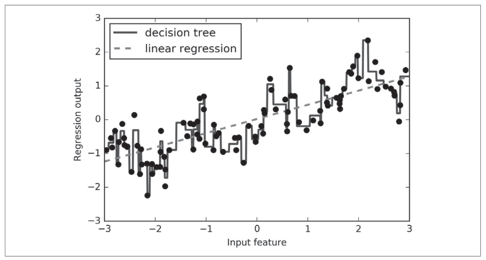
正如你所知，线性模型只能对线性关系建模，对于单个特征的情况就是一条直线；决策树可以构建更为复杂的数据模型，但这强烈依赖于数据表示。有一种方法可以让线性模型在连续数据上变得更加强大，就是使用**特征分箱（binning，也叫离散化 discretization）**将其划分为多个特征。
我们假设将特征的输入范围（在这个例子中是从 -3 到 3）划分成固定个数的箱子（bin），比如 10 个，那么数据点就可以用它所在的箱子来表示。首先需要定义箱子——在 -3 和 3 之间定义 10 个均匀分布的箱子。用 np.linspace 函数创建 11 个元素，从而创建 10 个箱子（两个连续边界之间的空间是一个箱子）：
第一个箱子包含特征取值在 -3 到 -2.4 之间的所有数据点，第二个箱子包含 -2.4 到 -1.8 之间的所有数据点，以此类推。接下来，记录每个数据点所属的箱子——这可以用 np.digitize 函数轻松计算出来：
# ===== 书 4.2 节：记录每个数据点所属的箱子 =====
which_bin = np.digitize(X, bins=bins)
print("\nData points:\n", X[:5])
print("\nBin membership for data points:\n", which_bin[:5])
Data points:
[[-0.753]
[ 2.704]
[ 1.392]
[ 0.592]
[-2.064]]
Bin membership for data points:
[[ 4]
[10]
[ 8]
[ 6]
[ 2]]
到这里我们做的是：将 wave 数据集中单个连续输入特征变换为一个分类特征（箱子编号），用于表示数据点所在的箱子。要想在这个数据上使用 scikit-learn 模型，利用 preprocessing 模块的 OneHotEncoder 将这个离散特征变换为 one-hot 编码。OneHotEncoder 实现的编码与 pandas.get_dummies 相同，但（写作本书时）它只适用于值为整数的分类变量：
# ===== 书 4.2 节：箱子编号 → one-hot 编码 =====
from sklearn.preprocessing import OneHotEncoder
# 使用 OneHotEncoder 进行变换
encoder = OneHotEncoder(sparse=False)
# encoder.fit 找到 which_bin 中的唯一值
encoder.fit(which_bin)
# transform 创建 one-hot 编码
X_binned = encoder.transform(which_bin)
print(X_binned[:5])
print("X_binned.shape: {}".format(X_binned.shape))
[[ 0. 0. 0. 1. 0. 0. 0. 0. 0. 0.]
[ 0. 0. 0. 0. 0. 0. 0. 0. 0. 1.]
[ 0. 0. 0. 0. 0. 0. 0. 1. 0. 0.]
[ 0. 0. 0. 0. 0. 1. 0. 0. 0. 0.]
[ 0. 1. 0. 0. 0. 0. 0. 0. 0. 0.]]
X_binned.shape: (100, 10)
版本差异：OneHotEncoder 的 sparse 参数已改名
书中 OneHotEncoder(sparse=False) 表示"返回密集 NumPy 数组"。scikit-learn 1.2 起该参数更名为 sparse_output=False，旧写法会报 TypeError。另一个反向变化值得知道：老版 OneHotEncoder 只吃整数类别（书里正是为了处理整数箱子编号），现在的版本支持字符串类别（配合 handle_unknown="ignore"），4.6 节的用法在现代环境下无须任何转换。
由于我们指定了 10 个箱子，所以变换后的 X_binned 数据集现在包含 10 个特征。下面在 one-hot 编码后的数据上构建新的线性模型和新的决策树模型，结果见图 4-2，箱子的边界由黑色虚线表示：
# ===== 书 4.2 节：在分箱特征上重建两个模型 =====
line_binned = encoder.transform(np.digitize(line, bins=bins)) # 对网格线也做同样的分箱+编码
reg = LinearRegression().fit(X_binned, y)
plt.plot(line, reg.predict(line_binned), label='linear regression binned')
reg = DecisionTreeRegressor(min_samples_split=3).fit(X_binned, y)
plt.plot(line, reg.predict(line_binned), label='decision tree binned')
plt.plot(X[:, 0], y, 'o', c='k')
plt.vlines(bins, -3, 3, linewidth=1, alpha=.2) # 黑色虚线 = 箱子边界
plt.legend(loc="best")
plt.ylabel("Regression output")
plt.xlabel("Input feature")
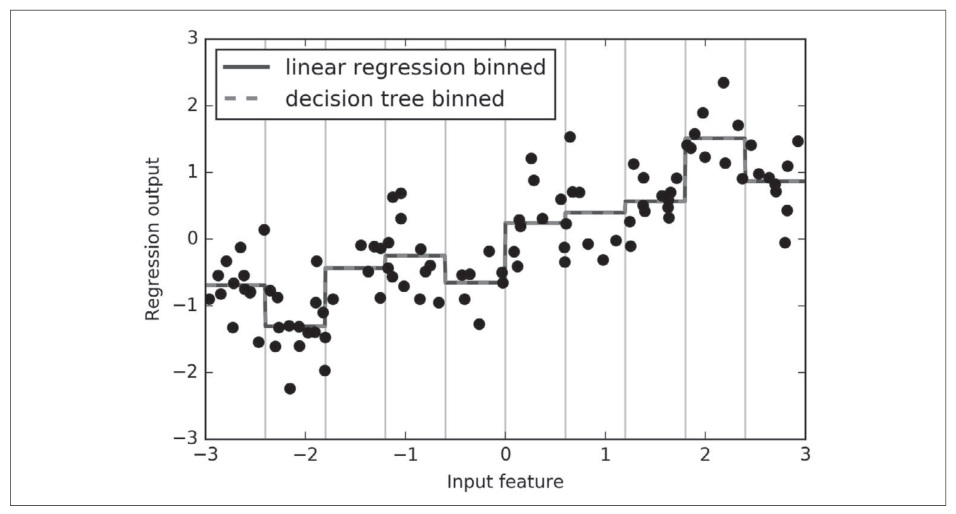
图中虚线和实线完全重合，说明线性回归模型和决策树做出了完全相同的预测——对每个箱子，二者都预测一个常数值。因为每个箱子内的特征是不变的（one-hot 之后箱内所有点的输入一模一样），所以对于一个箱子内的所有点，任何模型都会预测相同的值。
比较对特征进行分箱前后模型学到的内容：
- 线性模型变得更加灵活了——现在它对每个箱子具有不同的取值（不同的偏移），一条直线变成了 10 段台阶；
- 决策树模型的灵活性反而降低了——分箱特征对基于树的模型通常不会产生更好的效果，因为这种模型本来就可以学习在任意位置划分数据。从某种意义上来看，决策树可以自己学习如何分箱对预测这些数据最为有用。此外，决策树可以同时查看多个特征，而分箱通常针对的是单个特征。
不过，线性模型的表现力在数据变换后得到了极大的提高。对于特定的数据集，如果有充分的理由使用线性模型——比如数据集很大、维度很高，但有些特征与输出的关系是非线性的——那么分箱是提高建模能力的好方法。
拓展：为什么两棵曲线必然重合
one-hot 之后，箱内所有点的特征向量完全相同（只有该箱对应位是 1），任何模型对相同输入只能给出相同输出，所以两类模型都退化成"阶梯函数"。线性模型学到的每段台阶高度是 \(w_{\text{箱}} + b\)；决策树能做的最优划分也恰好是按箱子切开再取均值——两者的最优解相同。这也是"分箱对树无益"的极端展示：树本来能学到 \(-1.2 < x \le -0.9\) 这种任意边界，被你强行限定在 \(-1.8 < x \le -1.2\) 之后反而被捆住了手脚。分箱的本质是先验地把函数空间限制为"每箱一个常数"，这正是线性模型需要的自由度、树模型不需要的枷锁。
4.3 交互特征与多项式特征#
想要丰富特征表示（特别是对于线性模型而言），另一种方法是添加原始数据的交互特征（interaction feature）和多项式特征（polynomial feature）。这种特征工程通常用于统计建模，但也常用于许多实际的机器学习应用中。
作为第一个例子，再看一次图 4-2：线性模型对 wave 数据集中的每个箱子都学到一个常数值（只有偏移）。但我们知道，线性模型不仅可以学习偏移，还可以学习斜率。想要向分箱数据上的线性模型添加斜率，一种方法是重新加入原始特征（图中的 x 轴）。这样会得到 11 维的数据集，如图 4-3 所示：
# ===== 书 4.3 节：分箱特征 + 原始特征（单一全局斜率） =====
X_combined = np.hstack([X, X_binned]) # 1 个原始特征 + 10 个箱子指示特征
print(X_combined.shape)
# ===== 书 4.3 节：训练并可视化 =====
reg = LinearRegression().fit(X_combined, y)
line_combined = np.hstack([line, line_binned])
plt.plot(line, reg.predict(line_combined), label='linear regression combined')
for bin in bins:
plt.plot([bin, bin], [-3, 3], ':', c='k') # 点线标出箱子边界
plt.legend(loc="best")
plt.ylabel("Regression output")
plt.xlabel("Input feature")
plt.plot(X[:, 0], y, 'o', c='k')
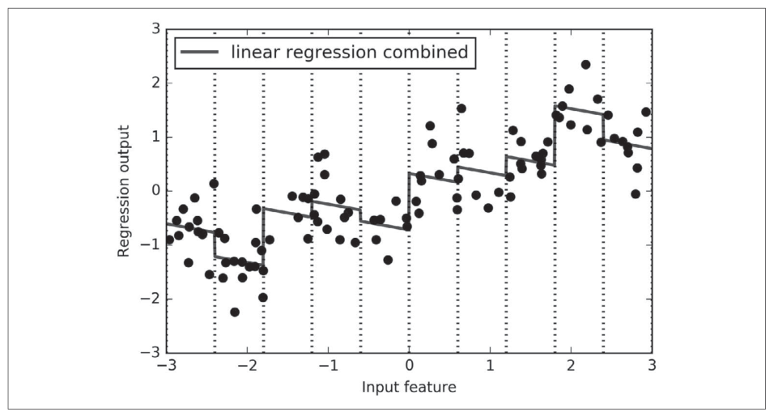
在这个例子中，模型在每个箱子中都学到一个偏移，还学到一个斜率。学到的斜率是向下的，并且在所有箱子中都相同——只有一个 x 轴特征，也就只有一个斜率。因为斜率在所有箱子中是相同的，所以它似乎不是很有用。我们更希望每个箱子都有一个不同的斜率！
为了实现这一点，可以添加交互特征或乘积特征，用来表示"数据点所在的箱子"以及"数据点在 x 轴上的位置"二者的组合：这个特征是箱子指示符与原始特征的乘积。它相当于给每个箱子复制一份专属的 x 轴特征——该特征在箱子内等于原始特征值，在其他位置等于零：
# ===== 书 4.3 节：交互特征（每箱一个斜率） =====
X_product = np.hstack([X_binned, X * X_binned]) # 10 个箱子指示 + 10 个"箱内才生效"的 x 值
print(X_product.shape)
这个数据集现在有 20 个特征：数据点所在箱子的指示符，与原始特征和箱子指示符的乘积。图 4-4 给出了线性模型在这种新表示上的结果：
# ===== 书 4.3 节：交互特征上的线性回归 =====
reg = LinearRegression().fit(X_product, y)
line_product = np.hstack([line_binned, line * line_binned])
plt.plot(line, reg.predict(line_product), label='linear regression product')
for bin in bins:
plt.plot([bin, bin], [-3, 3], ':', c='k')
plt.plot(X[:, 0], y, 'o', c='k')
plt.ylabel("Regression output")
plt.xlabel("Input feature")
plt.legend(loc="best")
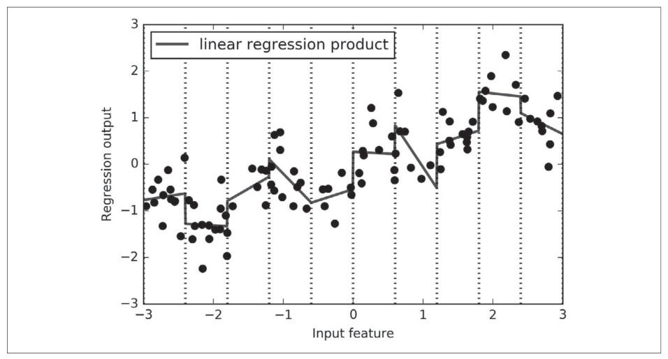
如你所见，现在这个模型中每个箱子都有自己的偏移和斜率。
使用原始特征的多项式#
使用分箱是扩展连续特征的一种方法。另一种方法是使用原始特征的多项式（polynomial）：对于给定特征 \(x\)，可以考虑 \(x^2\)、\(x^3\)、\(x^4\) 等等。这在 preprocessing 模块的 PolynomialFeatures 中实现：
# ===== 书 4.3 节：PolynomialFeatures 生成 10 次多项式特征 =====
from sklearn.preprocessing import PolynomialFeatures
# 包含直到 x ** 10 的多项式:
# 默认的 "include_bias=True" 会添加恒等于 1 的常数特征
poly = PolynomialFeatures(degree=10, include_bias=False)
poly.fit(X)
X_poly = poly.transform(X)
print("X_poly.shape: {}".format(X_poly.shape))
多项式的次数为 10，因此生成了 10 个特征。我们比较 X_poly 和 X 的元素：
# ===== 书 4.3 节：对比原始特征与多项式特征 =====
print("Entries of X:\n{}".format(X[:5]))
print("Entries of X_poly:\n{}".format(X_poly[:5]))
Entries of X:
[[-0.753]
[ 2.704]
[ 1.392]
[ 0.592]
[-2.064]]
Entries of X_poly:
[[ -0.753 0.567 -0.427 0.321 -0.242
0.182 -0.137 0.103 -0.078 0.058]
[ 2.704 7.313 19.777 53.482 144.632
391.125 1057.714 2860.360 7735.232 20918.278]
[ 1.392 1.938 2.697 3.754 5.226
7.274 10.125 14.094 19.618 27.307]
[ 0.592 0.350 0.207 0.123 0.073
0.043 0.025 0.015 0.009 0.005]
[ -2.064 4.260 -8.791 18.144 -37.448
77.289 -159.516 329.222 -679.478 1402.367]]
可以通过调用 get_feature_names 方法来获取特征的语义，给出每个特征的指数：
# ===== 书 4.3 节：多项式特征的名字 =====
print("Polynomial feature names:\n{}".format(poly.get_feature_names()))
Polynomial feature names:
['x0', 'x0^2', 'x0^3', 'x0^4', 'x0^5', 'x0^6', 'x0^7', 'x0^8', 'x0^9', 'x0^10']
版本差异：get_feature_names 已改名 get_feature_names_out
scikit-learn 1.0 起 get_feature_names 弃用、1.2 起移除，现代写法是 poly.get_feature_names_out()（接收输入特征名列表时同样传给 get_feature_names_out(输入名)）。输出形式变为带 x0_ 前缀的 numpy 数组（如 x0、x0^2），语义相同。
可以看到，X_poly 的第一列与 X 完全对应，而其他列则是第一列的幂。有趣的是，有些值非常大：第二行有大于 20 000 的元素，数量级与其他行都不相同（稍后第 5 章会看到，这种尺度悬殊正是缩放器要处理的场景）。
将多项式特征与线性回归模型一起使用，可以得到经典的**多项式回归（polynomial regression）**模型（见图 4-5）：
# ===== 书 4.3 节：10 次多项式回归 =====
reg = LinearRegression().fit(X_poly, y)
line_poly = poly.transform(line)
plt.plot(line, reg.predict(line_poly), label='polynomial linear regression')
plt.plot(X[:, 0], y, 'o', c='k')
plt.ylabel("Regression output")
plt.xlabel("Input feature")
plt.legend(loc="best")
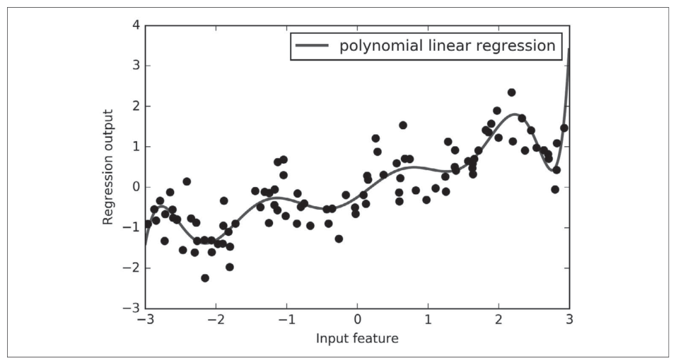
如你所见，多项式特征在这个一维数据上得到了非常平滑的拟合。但要注意：高次多项式在边界上或数据很少的区域可能有极端的表现（图 4-5 右端已经翘起来了）。
作为对比，下面是在原始数据（未做任何变换）上学到的核 SVM 模型（图 4-6）：
# ===== 书 4.3 节：核 SVM 无需显式特征变换 =====
from sklearn.svm import SVR
for gamma in [1, 10]:
svr = SVR(gamma=gamma).fit(X, y)
plt.plot(line, svr.predict(line), label='SVR gamma={}'.format(gamma))
plt.plot(X[:, 0], y, 'o', c='k')
plt.ylabel("Regression output")
plt.xlabel("Input feature")
plt.legend(loc="best")
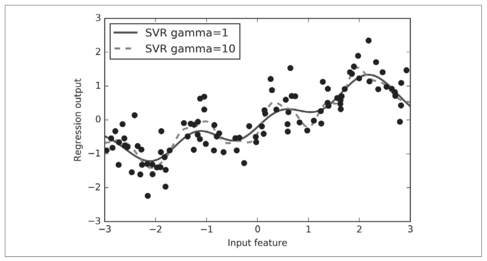
使用更加复杂的模型（即核 SVM），我们能够学到一个与多项式回归的复杂度类似的预测结果，且不需要进行显式的特征变换——这就是第 2 章说过的核技巧的直观好处。
更实际的应用：波士顿房价数据集#
作为对交互特征和多项式特征更加实际的应用，我们再次观察波士顿房价数据集（第 2 章已在这个数据集上使用过多项式特征）。现在来看一下这些特征的构造方式，以及多项式特征的帮助有多大。首先加载数据，然后利用 MinMaxScaler 将其缩放到 0 和 1 之间：
# ===== 书 4.3 节：加载波士顿房价并缩放 =====
from sklearn.datasets import load_boston
from sklearn.model_selection import train_test_split
from sklearn.preprocessing import MinMaxScaler
boston = load_boston()
X_train, X_test, y_train, y_test = train_test_split(
boston.data, boston.target, random_state=0)
# 缩放数据
scaler = MinMaxScaler()
X_train_scaled = scaler.fit_transform(X_train)
X_test_scaled = scaler.transform(X_test)
版本差异：load_boston 已从 scikit-learn 移除
波士顿房价数据集包含"按黑人比例排序的社区"（B 列）这一有种族歧视色彩的变量，scikit-learn 1.2 起正式删除了 load_boston，直接运行报 ImportError。替代方案：其一，mglearn.datasets.load_extended_boston()——作者维护的数据加载器返回的就是已含二次交互项的扩展波士顿数据（本书第 2 章正是用它做的对比实验）；其二，改用无争议的 fetch_california_housing()；其三，从原始来源（CMU StatLib）手动下载。下面的多项式实验在加州房价上同样成立，结论不变。
下面提取多项式特征和交互特征，次数最高为 2：
# ===== 书 4.3 节：degree=2 的多项式与交互特征 =====
poly = PolynomialFeatures(degree=2).fit(X_train_scaled)
X_train_poly = poly.transform(X_train_scaled)
X_test_poly = poly.transform(X_test_scaled)
print("X_train.shape: {}".format(X_train.shape))
print("X_train_poly.shape: {}".format(X_train_poly.shape))
原始数据有 13 个特征，现在被扩展到 105 个交互特征。这些新特征表示两个不同的原始特征之间所有可能的交互项，以及每个原始特征的平方。degree=2 的意思是，我们需要由最多两个原始特征的乘积组成的所有特征。利用 get_feature_names 方法可以得到输入特征和输出特征之间的确切对应关系：
# ===== 书 4.3 节：105 个特征的名字 =====
print("Polynomial feature names:\n{}".format(poly.get_feature_names()))
Polynomial feature names:
['1', 'x0', 'x1', 'x2', 'x3', 'x4', 'x5', 'x6', 'x7', 'x8', 'x9', 'x10',
'x11', 'x12', 'x0^2', 'x0 x1', 'x0 x2', 'x0 x3', 'x0 x4', 'x0 x5', 'x0 x6',
'x0 x7', 'x0 x8', 'x0 x9', 'x0 x10', 'x0 x11', 'x0 x12', 'x1^2', 'x1 x2',
'x1 x3', 'x1 x4', 'x1 x5', 'x1 x6', 'x1 x7', 'x1 x8', 'x1 x9', 'x1 x10',
'x1 x11', 'x1 x12', 'x2^2', 'x2 x3', 'x2 x4', 'x2 x5', 'x2 x6', 'x2 x7',
'x2 x8', 'x2 x9', 'x2 x10', 'x2 x11', 'x2 x12', 'x3^2', 'x3 x4', 'x3 x5',
'x3 x6', 'x3 x7', 'x3 x8', 'x3 x9', 'x3 x10', 'x3 x11', 'x3 x12', 'x4^2',
'x4 x5', 'x4 x6', 'x4 x7', 'x4 x8', 'x4 x9', 'x4 x10', 'x4 x11', 'x4 x12',
'x5^2', 'x5 x6', 'x5 x7', 'x5 x8', 'x5 x9', 'x5 x10', 'x5 x11', 'x5 x12',
'x6^2', 'x6 x7', 'x6 x8', 'x6 x9', 'x6 x10', 'x6 x11', 'x6 x12', 'x7^2',
'x7 x8', 'x7 x9', 'x7 x10', 'x7 x11', 'x7 x12', 'x8^2', 'x8 x9', 'x8 x10',
'x8 x11', 'x8 x12', 'x9^2', 'x9 x10', 'x9 x11', 'x9 x12', 'x10^2', 'x10 x11',
'x10 x12', 'x11^2', 'x11 x12', 'x12^2']
第一个新特征是常数特征，这里的名称是 "1"。接下来的 13 个特征是原始特征（名称从 "x0" 到 "x12"）。然后是第一个特征的平方（"x0^2"）以及它与其他特征的组合。
我们对 Ridge 在有交互特征和没有交互特征的数据上的性能进行对比：
# ===== 书 4.3 节：Ridge 对比 =====
from sklearn.linear_model import Ridge
ridge = Ridge().fit(X_train_scaled, y_train)
print("Score without interactions: {:.3f}".format(
ridge.score(X_test_scaled, y_test)))
ridge = Ridge().fit(X_train_poly, y_train)
print("Score with interactions: {:.3f}".format(
ridge.score(X_test_poly, y_test)))
显然，在使用 Ridge 时，交互特征和多项式特征对性能有很大的提升。但如果使用更加复杂的模型（比如随机森林），情况会稍有不同：
# ===== 书 4.3 节：随机森林对比 =====
from sklearn.ensemble import RandomForestRegressor
rf = RandomForestRegressor(n_estimators=100).fit(X_train_scaled, y_train)
print("Score without interactions: {:.3f}".format(
rf.score(X_test_scaled, y_test)))
rf = RandomForestRegressor(n_estimators=100).fit(X_train_poly, y_train)
print("Score with interactions: {:.3f}".format(rf.score(X_test_poly, y_test)))
你可以看到，即使没有额外的特征，随机森林的性能也要优于 Ridge；添加交互特征和多项式特征实际上会略微降低其性能。与 4.2 节分箱的结论一脉相承：显式特征扩展是在"喂"线性模型，树类模型自己会找交互，塞给它一堆冗余特征反而添乱。
拓展：105 是怎么来的
degree=2、include_bias=True（默认）时，特征个数是从 \(n+d\) 个槽位里选 \(d\) 个的组合数：\(\binom{13+2}{2} = \binom{15}{2} = 105\)，其中包含常数列 "1"、13 个原始项、13 个平方项 \(x_i^2\) 和 \(\binom{13}{2}=78\) 个交叉项 \(x_i x_j\)。特征数随 \(n\) 和 \(d\) 组合式爆炸——50 个特征做 degree=2 就有 1326 列，degree=3 就是 2 万多列，这也是第 2 章"多项式特征差点毁掉随机森林"的量级背景。控制爆炸的手段：interaction_only=True（只要交叉项不要平方和偏置）、先做特征选择再升次，或者干脆换核方法把"隐式展开"交给 RBF 核。
拓展：什么模型最吃"特征工程"这一套
本章前半的结论可以压成一张表，帮你决定"该不该动手造特征"：
| 模型 | 分箱 / 多项式 / 交互项对它的价值 |
|---|---|
| 线性模型、朴素贝叶斯 | 影响最大——模型容量有限，表示的职责全在特征上 |
| SVM、最近邻、神经网络 | 有时受益，但通常不如线性模型明显 |
| 决策树、随机森林、梯度提升树 | 基本无益甚至有害——树自己会找划分点与交互项 |
原书在小结处也强调：分箱、多项式和交互项都对模型性能有很大影响，对于复杂度较低的模型更是这样；基于树的模型通常能够自己发现重要的交互项，大多数情况下不需要显式变换数据。
4.4 单变量非线性变换#
上一节看到，添加特征的平方或立方可以改进线性回归模型。其他数学函数的变换通常也有用，特别是 log、exp 或 sin。虽然基于树的模型只关注特征的顺序，但线性模型和神经网络依赖于每个特征的尺度和分布。如果在特征和目标之间存在非线性关系，那么建模就变得非常困难，特别是对于回归问题。log 和 exp 函数可以帮助调节数据的相对比例，从而改进线性模型或神经网络的学习效果（第 2 章对内存价格数据应用过这种函数）。在处理具有周期性模式的数据时，sin 和 cos 函数非常有用。
大部分模型都在每个特征大致遵循高斯分布时表现最好（回归问题中还包括目标值 y）——也就是说，每个特征的直方图应该具有类似"钟形曲线"的形状。使用 log 和 exp 之类的变换并不稀奇，却是实现这一点的简单又有效的方法。一种特别常见的情况是处理整数计数数据：比如"用户 A 多长时间登录一次？"这类特征。计数不可能取负值，并且通常遵循特定的统计模式（译者注：这是泊松分布，对计数数据相当重要）。下面我们构造一个模拟的计数数据集，其性质与在自然状态下能找到的数据集类似——特征全都是整数值，而响应（目标）是连续的：
# ===== 书 4.4 节：构造模拟计数数据 =====
rnd = np.random.RandomState(0)
X_org = rnd.normal(size=(1000, 3)) # 原始高斯噪声
w = rnd.normal(size=3) # 随机权重
X = rnd.poisson(10 * np.exp(X_org)) # 泊松计数：强度 = 10 * exp(高斯) → 右偏长尾
y = np.dot(X_org, w) # 目标由高斯底层的 X_org 线性决定
我们来看第一个特征的前 10 个元素——它们都是正整数，但除此之外很难找出特定的模式。如果我们计算每个值的出现次数，那么数值的分布将变得更清楚：
# ===== 书 4.4 节：统计取值出现次数 =====
print("Number of feature appearances:\n{}".format(np.bincount(X[:, 0])))
Number of feature appearances:
[28 38 68 48 61 59 45 56 37 40 35 34 36 26 23 26 27 21 23 23 18 21 10 9 17
9 7 14 12 7 3 8 4 5 5 3 4 2 4 1 1 3 2 5 3 8 2 5 2 1
2 3 3 2 2 3 3 0 1 2 1 0 0 3 1 0 0 0 1 3 0 1 0 2 0
1 1 0 0 0 0 1 0 0 2 2 0 1 1 0 0 0 0 1 1 0 0 0 0 0
0 0 1 0 0 0 0 0 1 1 0 0 1 0 0 0 0 0 0 0 1 0 0 0 0
1 0 0 0 0 0 0 0 0 0 0 0 0 0 0 1]
数字 2 似乎是最常见的，共出现了 68 次（bincount 的下标始终从 0 开始），更大数字的出现次数快速下降。但也有一些很大的数字，比如 134 出现了 2 次。我们在图 4-7 中将计数可视化：
# ===== 书 4.4 节：计数特征直方图 =====
bins = np.bincount(X[:, 0])
plt.bar(range(len(bins)), bins, color='w')
plt.ylabel("Number of appearances")
plt.xlabel("Value")
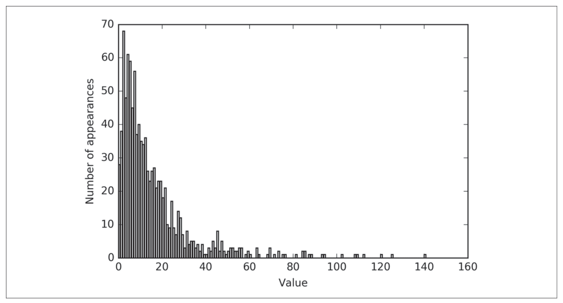
原书笔误：134 的出现次数
原书正文说"比如 134 出现了 2 次"。对照 Out[33] 的 bincount 输出，值 134 实际出现 0 次，出现 2 次的是 84 和 85（中译本译者注已指出这一点）。不影响论点：确实存在很大的离群计数。
特征 X[:, 1] 和 X[:, 2] 具有类似的性质。这种类型的数值分布（许多较小的值和一些非常大的值）在实践中非常常见，但大多数线性模型无法很好地处理这种数据。我们尝试拟合一个岭回归模型：
# ===== 书 4.4 节：未变换的 Ridge =====
from sklearn.linear_model import Ridge
X_train, X_test, y_train, y_test = train_test_split(X, y, random_state=0)
score = Ridge().fit(X_train, y_train).score(X_test, y_test)
print("Test score: {:.3f}".format(score))
从相对较小的 \(R^2\) 分数可以看出，Ridge 无法真正捕捉到 X 和 y 之间的关系。不过，应用对数变换可能有用。由于数据取值中包括 0（对数在 0 处没有定义），所以我们不能直接应用 log，而是要计算 log(X + 1)：
# ===== 书 4.4 节：log(X + 1) 变换 =====
X_train_log = np.log(X_train + 1)
X_test_log = np.log(X_test + 1)
变换之后，数据分布的不对称性变小，也不再有非常大的异常值（见图 4-8）：
# ===== 书 4.4 节：变换后的直方图 =====
plt.hist(X_train_log[:, 0], bins=25, color='gray')
plt.ylabel("Number of appearances")
plt.xlabel("Value")
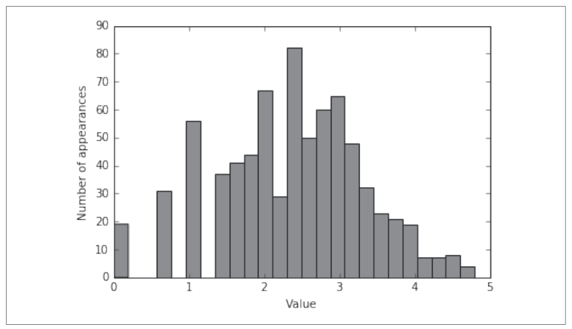
在新数据上构建一个岭回归模型，可以得到更好的拟合：
# ===== 书 4.4 节：log 变换后的 Ridge =====
score = Ridge().fit(X_train_log, y_train).score(X_test_log, y_test)
print("Test score: {:.3f}".format(score))
\(R^2\) 从 0.622 提升到 0.875——同一模型、同一份数据，只换了一个表示。
为数据集和模型的所有组合寻找最佳变换，这在某种程度上是一门艺术。在这个例子中所有特征都具有相同的性质，这在实践中非常少见。通常来说，只有一部分特征应该进行变换，有时每个特征的变换方式也各不相同。前面提到过，对基于树的模型而言这种变换并不重要，但对线性模型来说可能至关重要。对回归的目标变量 y 进行变换有时也是一个好主意：尝试预测计数（比如订单数量）是一项相当常见的任务，而且使用 log(y + 1) 变换也往往有用（译者注：这是对泊松分布非常粗略的近似；从概率的角度看，更规范的做法是泊松回归）。
拓展：log 为什么专治"长尾计数"
图 4-7 的形状来自泊松分布：方差随均值增长，强度稍大就会冒出极端大值，直方图右侧拖出长尾。线性模型对这种长尾很敏感——少数大值点主导了平方损失和系数估计，而大部分样本挤在 0~20 的窄区间里学不到东西。log 把"乘性差异"变成"加性差异"（10→100 与 100→1000 在 log 后都只差一档），长尾被压扁、分布接近钟形，且 log(X+1) 里的 +1 专门保住了 0 值样本。反过来，如果数据本来就近似高斯，再 log 只会扭曲尺度。判断要不要 log 的口诀：直方图右偏、跨度跨几个数量级、物理上非负（计数/价格/人口/收入）→ 试 log；带负值 → 先想别的。神经网络同样受益：输入分布规整后，梯度更新更稳定。
4.5 自动化特征选择#
有了这么多种创建新特征的方法，你可能会想要增大数据的维度，使其远大于原始特征的数量。但是，添加更多特征会使所有模型变得更加复杂，从而增大过拟合的可能性。在添加新特征或处理一般的高维数据集时，最好将特征的数量减少到只包含最有用的那些特征，并删除其余特征——这样会得到泛化能力更好、更简单的模型。
但你如何判断每个特征的作用有多大呢？有三种基本的策略：单变量统计（univariate statistics）、基于模型的选择（model-based selection）和迭代选择（iterative selection）。所有这些方法都是监督方法——它们需要目标值来拟合模型。这也就是说，我们需要将数据划分为训练集和测试集，并只在训练集上拟合特征选择。
4.5.1 单变量统计#
在单变量统计中，我们计算每个特征和目标值之间的关系是否存在统计显著性，然后选择具有最高置信度的特征。对于分类问题，这也被称为方差分析（analysis of variance，ANOVA）。这些测试的一个关键性质是它们是单变量的（univariate），即只单独考虑每个特征：如果一个特征只有在与另一个特征合并时才具有信息量，那么这个特征将被舍弃。单变量测试的计算速度通常很快，并且不需要构建模型；另一方面，它们完全独立于你之后想要应用的模型。
想在 scikit-learn 中使用单变量特征选择，你需要选择一项测试——对分类问题通常是 f_classif（默认值），对回归问题通常是 f_regression——然后基于测试中确定的 p 值来选择一种舍弃特征的方法。所有舍弃特征的方法都使用阈值来舍弃所有 p 值过大的特征（p 值大意味着它们不可能与目标值相关）。计算阈值的方法各有不同，最简单的是 SelectKBest（选择固定数量的 k 个特征）和 SelectPercentile（选择固定百分比的特征）。
我们将分类的特征选择应用于 cancer 数据集。为了使任务更难一点，我们向数据中添加 50 个没有信息量的噪声特征，并期望特征选择能识别出它们并删除：
# ===== 书 4.5.1 节：cancer 数据 + 50 列纯噪声 =====
from sklearn.datasets import load_breast_cancer
from sklearn.feature_selection import SelectPercentile
from sklearn.model_selection import train_test_split
cancer = load_breast_cancer()
# 获得确定性的随机数
rng = np.random.RandomState(42)
noise = rng.normal(size=(len(cancer.data), 50))
# 向数据中添加噪声特征
# 前 30 个特征来自数据集，后 50 个是噪声
X_w_noise = np.hstack([cancer.data, noise])
X_train, X_test, y_train, y_test = train_test_split(
X_w_noise, cancer.target, random_state=0, test_size=.5)
# 使用 f_classif（默认值）和 SelectPercentile 来选择 50% 的特征
select = SelectPercentile(percentile=50)
select.fit(X_train, y_train)
# 对训练集进行变换
X_train_selected = select.transform(X_train)
print("X_train.shape: {}".format(X_train.shape))
print("X_train_selected.shape: {}".format(X_train_selected.shape))
特征的数量从 80 减少到 40（原始特征数量的 50%）。可以用 get_support 方法查看哪些特征被选中，它会返回所选特征的布尔遮罩（mask）（其可视化见图 4-9）：
# ===== 书 4.5.1 节：查看特征遮罩 =====
mask = select.get_support()
print(mask)
# 将遮罩可视化——黑色为 True，白色为 False
plt.matshow(mask.reshape(1, -1), cmap='gray_r')
plt.xlabel("Sample index")
[ True True True True True True True True True False True False
True True True True True True False False True True True True
True True True True True True False False False True False True
False False True False False False False True False False True False
False True False True False False False False False False True False
True False False False False True False True False False False False
True True False True False False False False]
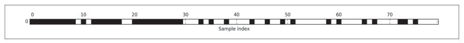
从遮罩的可视化可以看出：大多数被选中的特征都是原始特征，并且大多数噪声特征都已被删除。但原始特征的还原并不完美（有几个原始特征被误删、个别噪声特征混了进来）。我们来比较 Logistic 回归在所有特征上的性能与仅使用所选特征的性能：
# ===== 书 4.5.1 节：特征选择前后的 LogisticRegression =====
from sklearn.linear_model import LogisticRegression
# 对测试数据进行变换
X_test_selected = select.transform(X_test)
lr = LogisticRegression()
lr.fit(X_train, y_train)
print("Score with all features: {:.3f}".format(lr.score(X_test, y_test)))
lr.fit(X_train_selected, y_train)
print("Score with only selected features: {:.3f}".format(
lr.score(X_test_selected, y_test)))
在这个例子中，删除噪声特征可以提高性能，即使丢失了某些原始特征。这是一个非常简单的假想示例，在真实数据上的结果要更加复杂。不过，如果特征量太大以至于无法构建模型，或者你怀疑许多特征完全没有信息量，那么单变量特征选择还是非常有用的。
拓展：sklearn 还备着互信息和卡方两把尺子
书中只用了默认的 f_classif（ANOVA F 检验），它度量的是"特征均值在各类间是否有显著差异"，本质上只看线性关系。sklearn.feature_selection 还提供两个常用替代：mutual_info_classif（互信息）——度量特征与目标之间任意统计依赖（包括非线性），代价是要估计分布、计算更慢且对样本量敏感，配合 SelectPercentile(mutual_info_classif, percentile=...) 使用；chi2（卡方检验）——要求特征非负，检验每个特征的取值分布与类别分布是否独立，特别适合词频/TF-IDF 这类计数型文本特征。经验法则：数值特征、线性关系为主 → f_classif（快、稳）；怀疑非线性依赖 → 互信息；非负计数特征 → 卡方。回归问题对应的是 f_regression 与 mutual_info_regression。
4.5.2 基于模型的特征选择#
基于模型的特征选择使用一个监督机器学习模型来判断每个特征的重要性，并且仅保留最重要的特征。注意：用于特征选择的监督模型不需要与用于最终监督建模的模型相同。特征选择模型需要为每个特征提供某种重要性度量，以便用这个度量对特征进行排序。决策树和基于决策树的模型提供了 feature_importances_ 属性，直接编码每个特征的重要性；线性模型系数的绝对值也可以用于表示特征重要性。第 2 章见过，L1 惩罚的线性模型学到的是稀疏系数，只用到特征的一个很小的子集——这可以被视为模型本身的一种特征选择形式，但也可以用作另一个模型选择特征的预处理步骤。
与单变量选择不同，基于模型的选择同时考虑所有特征，因此可以获取交互项（如果模型能够获取它们的话）。要使用基于模型的特征选择，需要使用 SelectFromModel 变换器：
# ===== 书 4.5.2 节：SelectFromModel + 随机森林 =====
from sklearn.feature_selection import SelectFromModel
from sklearn.ensemble import RandomForestClassifier
select = SelectFromModel(
RandomForestClassifier(n_estimators=100, random_state=42),
threshold="median")
SelectFromModel 类选出重要性度量（由监督模型提供）大于给定阈值的所有特征。为了得到可以与单变量特征选择进行对比的结果，我们使用中位数作为阈值（threshold="median"），这样就可以选择一半特征。我们用包含 100 棵树的随机森林分类器来计算特征重要性——这是一个相当复杂的模型，也比单变量测试要强大得多。实际拟合：
# ===== 书 4.5.2 节：拟合并变换 =====
select.fit(X_train, y_train)
X_train_l1 = select.transform(X_train)
print("X_train.shape: {}".format(X_train.shape))
print("X_train_l1.shape: {}".format(X_train_l1.shape))
再次查看选中的特征（见图 4-10）：
# ===== 书 4.5.2 节：遮罩可视化 =====
mask = select.get_support()
# 将遮罩可视化——黑色为 True，白色为 False
plt.matshow(mask.reshape(1, -1), cmap='gray_r')
plt.xlabel("Sample index")
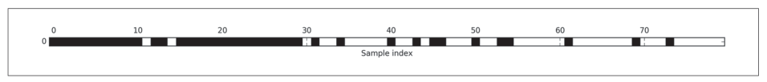
这次，除了两个原始特征，其他原始特征都被选中。由于我们指定选择 40 个特征（中位数阈值），所以也选择了一些噪声特征。来看一下其性能：
# ===== 书 4.5.2 节：选择后训练 LogisticRegression =====
X_test_l1 = select.transform(X_test)
score = LogisticRegression().fit(X_train_l1, y_train).score(X_test_l1, y_test)
print("Test score: {:.3f}".format(score))
利用更好的特征选择，性能也得到了提高（0.930 → 0.940 → 0.951）。
4.5.3 迭代特征选择#
在单变量测试中，我们没有使用模型；在基于模型的选择中，我们使用了单个模型来选择特征。迭代特征选择则会构建一系列模型，每个模型都使用不同数量的特征。有两种基本方法：
- 从没有特征开始，然后逐个添加特征，直到满足某个终止条件；
- 从所有特征开始，然后逐个删除特征，直到满足某个终止条件。
由于构建了一系列模型，这些方法的计算成本要比前面讨论过的方法更高。其中一种特殊方法是递归特征消除（recursive feature elimination，RFE）：它从所有特征开始构建模型，并根据模型舍弃最不重要的特征，然后使用除被舍弃特征之外的所有特征来构建一个新模型，如此继续，直到仅剩下预设数量的特征。要让这种方法能够运行，用于选择的模型需要提供某种确定特征重要性的方法（正如基于模型的选择所做的那样）。下面使用之前用过的同一个随机森林模型，结果如图 4-11 所示：
# ===== 书 4.5.3 节：RFE 递归特征消除 =====
from sklearn.feature_selection import RFE
select = RFE(RandomForestClassifier(n_estimators=100, random_state=42),
n_features_to_select=40)
select.fit(X_train, y_train)
# 将选中的特征可视化：
mask = select.get_support()
plt.matshow(mask.reshape(1, -1), cmap='gray_r')
plt.xlabel("Sample index")
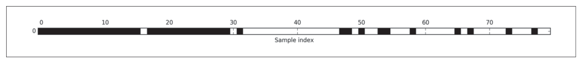
与单变量选择和基于模型的选择相比，迭代特征选择的结果更好，但仍然漏掉了一个特征。运行上述代码需要的时间也比基于模型的选择长得多——因为对随机森林模型训练了 40 次，每运行一次删除一个特征。来测试一下使用 RFE 做特征选择时 Logistic 回归模型的精度：
# ===== 书 4.5.3 节：RFE 之后的 LogisticRegression =====
X_train_rfe = select.transform(X_train)
X_test_rfe = select.transform(X_test)
score = LogisticRegression().fit(X_train_rfe, y_train).score(X_test_rfe, y_test)
print("Test score: {:.3f}".format(score))
我们还可以利用 RFE 内部使用的模型来进行预测——这仅使用被选中的特征集：
# ===== 书 4.5.3 节：RFE 内部模型直接预测 =====
print("Test score: {:.3f}".format(select.score(X_test, y_test)))
这里，RFE 内部使用的随机森林的性能，与在所选特征上训练一个 Logistic 回归模型得到的性能完全相同。换句话说：只要我们选择了正确的特征，线性模型的表现就与随机森林一样好。
如果你不确定何时应该选择哪些特征作为机器学习算法的输入，那么自动化特征选择可能特别有用。它还有助于减少所需要的特征数量、加快预测速度，或允许可解释性更强的模型。在大多数现实情况下，使用特征选择不太可能大幅提升性能，但它仍是特征工程工具箱中一个非常有价值的工具。
拓展：三种策略怎么选 + RFE 的搭档
把三种策略放在一起看：
| 策略 | 用几个模型 | 能否发现交互 | 成本 | sklearn 工具 |
|---|---|---|---|---|
| 单变量统计 | 0 个（只算统计量） | 不能（逐特征孤立看） | 极低 | SelectKBest / SelectPercentile + f_classif 等 |
| 基于模型 | 1 个 | 能（若模型能） | 低 | SelectFromModel + feature_importances_ / L1 系数 |
| 迭代选择 | 一系列 | 能 | 高（RFE 训练 40 次模型） | RFE / RFECV |
RFE 最经典的搭档其实是线性模型 + 系数绝对值（迭代地砍掉权重最小的特征）。RFECV 在 RFE 的基础上用交叉验证自动决定"保留多少个特征"，省去手动设 n_features_to_select——代价是再乘上 CV 折数。另外再强调一次那条纪律：这三种方法都是监督方法，fit 只能发生在训练集上，然后 transform 测试集——先在全量数据上做特征选择再划分，评估结果会虚高（数据泄漏）。
4.6 利用专家知识#
对于特定应用来说，在特征工程中通常可以利用专家知识（expert knowledge）。虽然在许多情况下，机器学习的目的是避免创建一组专家设计的规则，但这并不意味着应该舍弃该应用或该领域的先验知识。通常来说，领域专家可以帮助找出有用的特征，其信息量比数据原始表示要大得多。
想象一下，你在一家旅行社工作，想要预测机票价格。假设你有价格以及日期、航空公司、出发地和目的地的记录。机器学习模型可能从这些记录中构建一个相当不错的模型，但可能无法学到机票价格中的某些重要因素：例如，在度假高峰月份和假日期间，机票价格通常更高。虽然某些假日的日期是固定的（比如圣诞节），其影响可以从日期中学到，但其他假日的日期可能取决于月相（比如光明节和复活节），或者由官方规定（比如学校放假）。如果每个航班都只使用公历记录日期，则无法从数据中学到这些事件。但添加一个特征是很简单的——编码"一个航班在公休假日或学校假期的之前、之中还是之后"。利用这种方法可以将关于任务属性的先验知识编码到特征中，以辅助机器学习算法。添加一个特征并不会强制机器学习算法使用它：即使最终发现假日信息不包含关于机票价格的信息，用这一信息来扩充数据也不会有什么害处。
下面我们来看一个利用专家知识的特例——虽然在这个例子中，对这些专家知识更正确的叫法应该是"常识"。任务是预测在 Andreas 家门口的自行车出租。在纽约，Citi Bike 运营着一个带有付费系统的自行车租赁站网络，这些站点遍布整个城市。自行车出租数据以匿名形式公开（www.citibikenyc.com/system-data），并用各种方法进行了分析。我们想要解决的任务是：对于给定的日期和时间，预测有多少人将会在 Andreas 的家门口租一辆自行车——这样他就知道是否还有自行车留给他。
首先将这个站点 2015 年 8 月的数据加载为一个 pandas 数据框，并将数据重新采样为每 3 小时一个数据点，以得到每一天的主要趋势：
# ===== 书 4.6 节：加载 Citi Bike 数据 =====
citibike = mglearn.datasets.load_citibike()
print("Citi Bike data:\n{}".format(citibike.head()))
Citi Bike data:
starttime
2015-08-01 00:00:00 3.0
2015-08-01 03:00:00 0.0
2015-08-01 06:00:00 9.0
2015-08-01 09:00:00 41.0
2015-08-01 12:00:00 39.0
Freq: 3H, Name: one, dtype: float64
下图给出了整个月租车数量的可视化（图 4-12）：
# ===== 书 4.6 节：整月租车数量曲线 =====
plt.figure(figsize=(10, 3))
xticks = pd.date_range(start=citibike.index.min(), end=citibike.index.max(),
freq='D') # 每天一个刻度
plt.xticks(xticks, xticks.strftime("%a %m-%d"), rotation=90, ha="left")
plt.plot(citibike, linewidth=1)
plt.xlabel("Date")
plt.ylabel("Rentals")
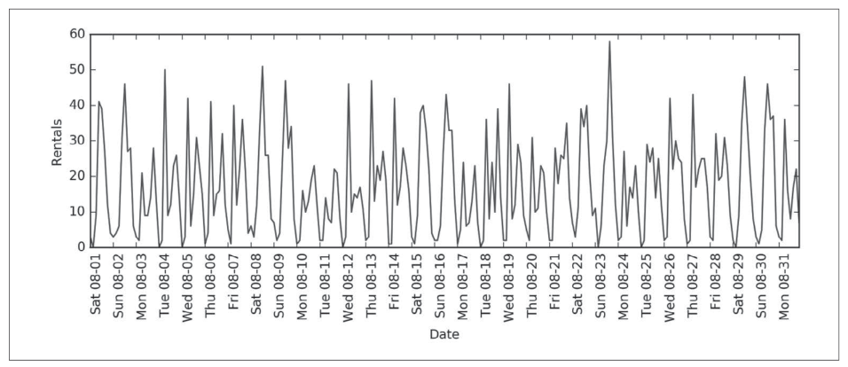
观察此数据，我们可以清楚地区分每 24 小时中的白天和夜间，而且工作日和周末的模式似乎也有很大不同。
在对这种时间序列上的预测任务进行评估时，我们通常希望从过去学习并预测未来：划分训练集和测试集时，使用某个特定日期之前的所有数据作为训练集、该日期之后的所有数据作为测试集。这是我们通常使用时间序列预测的方式——已知过去所有的出租数据，明天会发生什么？我们将使用前 184 个数据点（对应前 23 天）作为训练集，剩余 64 个数据点（对应剩余 8 天）作为测试集。
在我们的预测任务中，使用的唯一特征就是某一租车数量对应的日期和时间：输入特征形如 2015-08-01 00:00:00，而输出是在接下来 3 小时内的租车数量（根据我们的 DataFrame，在这个例子中是 3）。
在计算机上存储日期的常用方式是使用 POSIX 时间（这有些令人意外）：它是从 1970 年 1 月 1 日 00:00:00（Unix 时间的起点）起至现在的总秒数。首先，我们尝试使用这个单一整数特征作为数据表示：
# ===== 书 4.6 节：目标值 + POSIX 时间特征 =====
# 提取目标值（租车数量）
y = citibike.values
# 利用 "%s" 将时间转换为 POSIX 时间
X = citibike.index.strftime("%s").astype("int").reshape(-1, 1)
版本差异：strftime("%s") 在 Windows 上不工作，新 pandas 也要改写法
原书这行代码依赖两个旧时代的行为：一是 strftime("%s") 把时间戳格式化为 Unix 秒数——但 %s 不是 C 标准格式符，Windows 的 strftime 不支持，在新环境下经常得到空串或错误值；二是旧 pandas 的 Index/Series 自带 reshape，且 Series.values 隐式返回 ndarray。在 pandas 2.x 下的等价写法：
y = citibike.to_numpy()
# POSIX 秒 = 与 Unix 纪元的差值换算成秒
X = ((citibike.index - pd.Timestamp("1970-01-01")) // pd.Timedelta("1s")) \
.to_numpy().reshape(-1, 1)
另外，书后输出里的 Freq: 3H 在 pandas 2.2 起提示改用小写 freq='3h'（load_citibike 内部如此），行为不变；citibike.index.hour、citibike.index.dayofweek 在新 pandas 返回 Index 对象，没有 .reshape 方法，同样要 .to_numpy().reshape(-1, 1)——下文两处用到时以此为准。
接着定义一个函数，它可以将数据划分为训练集和测试集、构建模型并将结果可视化——后面会反复用到：
# ===== 书 4.6 节：评估函数 eval_on_features =====
# 使用前 184 个数据点用于训练，剩余的数据点用于测试
n_train = 184
# 对给定特征集上的回归进行评估和作图的函数
def eval_on_features(features, target, regressor):
# 将给定特征划分为训练集和测试集
X_train, X_test = features[:n_train], features[n_train:]
# 同样划分目标数组
y_train, y_test = target[:n_train], target[n_train:]
regressor.fit(X_train, y_train)
print("Test-set R^2: {:.2f}".format(regressor.score(X_test, y_test)))
y_pred = regressor.predict(X_test)
y_pred_train = regressor.predict(X_train)
plt.figure(figsize=(10, 3))
plt.xticks(range(0, len(X), 8), xticks.strftime("%a %m-%d"), rotation=90,
ha="left")
plt.plot(range(n_train), y_train, label="train")
plt.plot(range(n_train, len(y_test) + n_train), y_test, '-', label="test")
plt.plot(range(n_train), y_pred_train, '--', label="prediction train")
plt.plot(range(n_train, len(y_test) + n_train), y_pred, '--',
label="prediction test")
plt.legend(loc=(1.01, 0))
plt.xlabel("Date")
plt.ylabel("Rentals")
我们之前看到，随机森林需要很少的数据预处理，因此它似乎很适合作为第一个模型。使用 POSIX 时间特征 X 并将随机森林回归传入 eval_on_features 函数，结果如图 4-13 所示：
# ===== 书 4.6 节：随机森林 + POSIX 时间 =====
from sklearn.ensemble import RandomForestRegressor
regressor = RandomForestRegressor(n_estimators=100, random_state=0)
plt.figure()
eval_on_features(X, y, regressor)
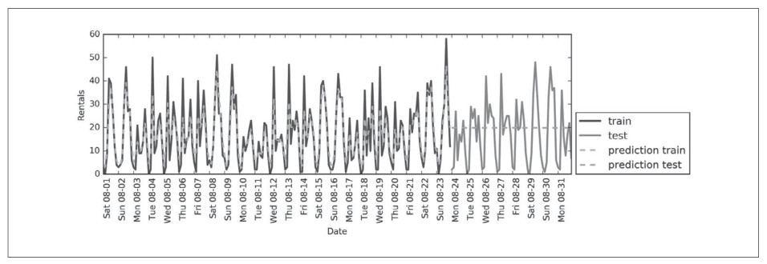
在训练集上的预测结果相当好，这符合随机森林通常的表现。但对于测试集来说，预测结果是一条常数直线。\(R^2\) 为 -0.04，说明我们什么都没有学到。发生了什么？
问题在于特征和随机森林的组合：测试集中 POSIX 时间特征的值超出了训练集中特征取值的范围（测试集数据点的时间戳都晚于训练集中的所有数据点）。树以及随机森林无法外推（extrapolate）到训练集之外的特征范围——树只能输出它见过的叶节点里的均值，对新的大数值只能一路走到最右边的叶子上，结果就是模型只能预测训练集中最近数据点的目标值，即最后一次观测到数据的时间。
显然，我们可以做得更好。这就是"专家知识"的用武之地：通过观察训练数据中的租车数量图像，我们发现两个因素似乎非常重要——一天内的时间与一周的星期几。因此添加这两个特征，并把从 POSIX 时间中学不到任何东西的那个特征删掉。首先，仅使用每天的时刻。如图 4-14 所示，现在的预测结果对一周内的每天都具有相同的模式：
# ===== 书 4.6 节：特征 1 —— 每天的时刻 =====
X_hour = citibike.index.hour.values.reshape(-1, 1) # 原书写法 .reshape()，新 pandas 需 .values.reshape
eval_on_features(X_hour, y, regressor)
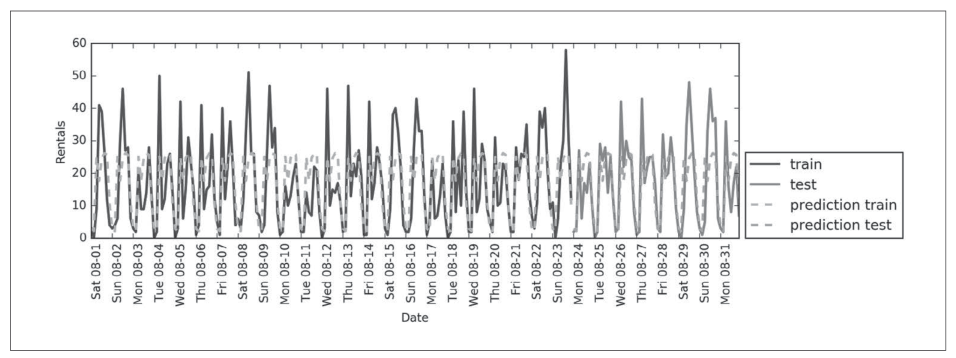
\(R^2\) 已经好多了，但预测结果显然没有抓住每周的模式。接着添加一周的星期几作为特征（见图 4-15）：
# ===== 书 4.6 节：特征 2 —— 加上一周的星期几 =====
X_hour_week = np.hstack([citibike.index.dayofweek.values.reshape(-1, 1),
citibike.index.hour.values.reshape(-1, 1)])
eval_on_features(X_hour_week, y, regressor)
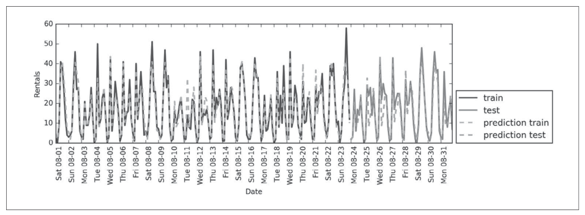
现在我们的模型通过考虑一周的星期几和一天内的时间捕捉到了周期性的行为。\(R^2\) 为 0.84，预测性能相当好。模型学到的内容可能是"8 月前 23 天中，星期几与时刻每种组合的平均租车数量"——这实际上不需要像随机森林这样复杂的模型。所以我们尝试一个更简单的模型——LinearRegression（见图 4-16）：
# ===== 书 4.6 节：线性模型 + 整数连续编码（失败案例） =====
from sklearn.linear_model import LinearRegression
eval_on_features(X_hour_week, y, LinearRegression())
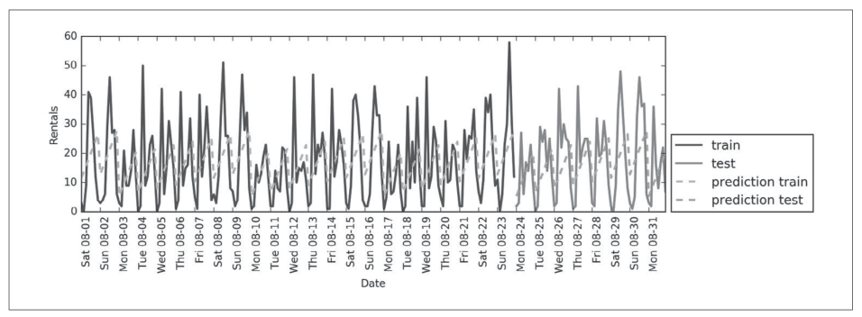
LinearRegression 的效果差得多，而且周期性模式看起来很奇怪。原因在于：我们用整数编码一周的星期几和一天内的时间，而线性模型把它们解释为连续变量——它只能学到关于每天时间的线性函数，学到的是"时间越晚，租车数量越多"。但实际模式比这复杂得多。我们可以通过将整数解释为分类变量（用 OneHotEncoder 进行变换）来获取这种模式（见图 4-17）：
# ===== 书 4.6 节：one-hot 编码后重试线性模型 =====
enc = OneHotEncoder()
X_hour_week_onehot = enc.fit_transform(X_hour_week).toarray() # 稀疏矩阵 → 密集数组
eval_on_features(X_hour_week_onehot, y, Ridge())
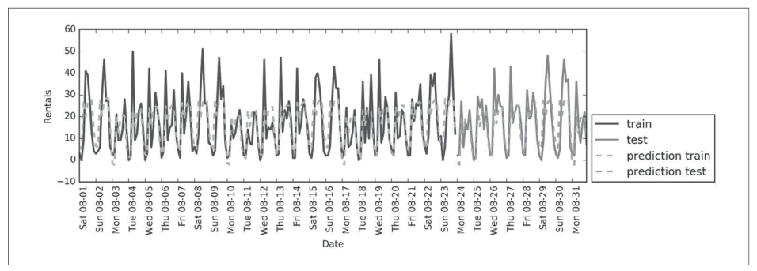
它给出了比连续特征编码好得多的匹配。现在线性模型为一周内的每一天都学到一个系数，为一天内的每个时刻都学到一个系数——也就是说，一周七天共享"一天内每个时刻"的模式。
利用交互特征，我们可以让模型为"星期几 × 时刻"的每一种组合都学到一个系数（见图 4-18）：
# ===== 书 4.6 节：交互特征——每种组合一个系数 =====
poly_transformer = PolynomialFeatures(degree=2, interaction_only=True,
include_bias=False)
X_hour_week_onehot_poly = poly_transformer.fit_transform(X_hour_week_onehot)
lr = Ridge()
eval_on_features(X_hour_week_onehot_poly, y, lr)
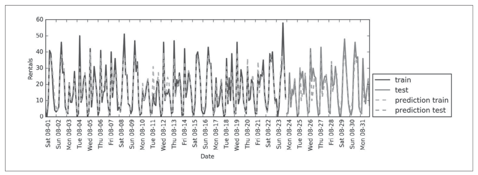
这一变换最终得到一个性能与随机森林类似的模型（\(R^2\) 0.85 对 0.84）。这个模型的一大优点是，可以很清楚地看到学到了什么：对每个星期几和时刻的交互项学到一个系数。我们可以将模型学到的系数作图，而这对于随机森林来说是不可能的。
首先，为时刻和星期几特征创建特征名称：
# ===== 书 4.6 节：为特征起名字 =====
hour = ["%02d:00" % i for i in range(0, 24, 3)] # 00:00, 03:00, ..., 21:00
day = ["Mon", "Tue", "Wed", "Thu", "Fri", "Sat", "Sun"]
features = day + hour
然后，利用 get_feature_names 方法对 PolynomialFeatures 提取的所有交互特征进行命名，并仅保留系数不为零的那些特征：
# ===== 书 4.6 节：给交互特征命名并筛出非零系数 =====
features_poly = poly_transformer.get_feature_names(features)
features_nonzero = np.array(features_poly)[lr.coef_ != 0]
coef_nonzero = lr.coef_[lr.coef_ != 0]
下面将线性模型学到的系数可视化，如图 4-19 所示：
# ===== 书 4.6 节：可视化学到的系数 =====
plt.figure(figsize=(15, 2))
plt.plot(coef_nonzero, 'o')
plt.xticks(np.arange(len(coef_nonzero)), features_nonzero, rotation=90)
plt.xlabel("Feature name")
plt.ylabel("Feature magnitude")
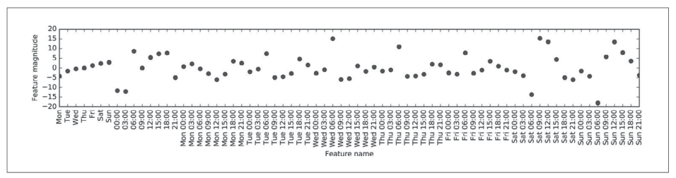
拓展：为什么要筛 coef_ != 0，以及 71 个非零特征从哪来
interaction_only=True 会对全部 15 个 one-hot 列两两相乘：同属"星期几"的两列相乘恒为 0（同一样本不可能同时是周一和周二），同属"时刻"的两列同理。这些恒为零的列系数学出来也是 0，画在图上只会添乱——所以书里用 lr.coef_ != 0 过滤。有效特征 = 7 个星期几 + 8 个时刻 + 7×8=56 个组合交叉项，共 71 个，正是图 4-19 横轴的点数。这一段完整演示了本章所有武器的合体：one-hot（4.1）+ 交互特征（4.3）+ "把整数当类别别当连续"（4.1.2）+ 可解释的线性模型（对比 4.5 的特征选择视角）。同时注意它和图 4-13 的对照：线性模型 + 好特征 打败 随机森林 + 烂特征——"树能自己找交互"的前提是特征语义可比较，超出训练范围的时间戳对树是死路。
另一个值得带走的套路：任务里说的 days_since_last_purchase（距上次购买的天数）这类特征，与本章"时刻/星期几"同属一族——都是把日期字段加工成模型能用的语义量。电商复购预测常用的一组：距上次购买天数、30 天内购买次数、注册至今天数、是否节假日。POSIX 时间戳本身几乎永远不该直接喂模型（对线性模型是"越大越好"的假斜率，对树是"无法外推"的死胡同），应该拆成循环特征（小时、星期几，必要时 sin/cos 编码"时刻的圆周位置"）+ 距今类特征（间隔天数）。
4.7 小结与展望#
本章讨论了如何处理不同的数据类型（特别是分类变量）。我们强调了使用适合机器学习算法的数据表示方式的重要性，例如 one-hot 编码过的分类变量。还讨论了通过特征工程生成新特征的重要性，以及利用专家知识从数据中创建导出特征的可能性。特别是线性模型，可能会从分箱、添加多项式和交互项而生成的新特征中大大受益；对于更加复杂的非线性模型（比如随机森林和 SVM），在无需显式扩展特征空间的前提下就可以学习更加复杂的任务。在实践中，所使用的特征（以及特征与方法之间的匹配）通常是使机器学习方法表现良好的最重要的因素。
现在你已经知道了如何适当地表示数据、以及对哪个任务使用哪种算法。下一章重点介绍评估机器学习模型的性能与选择正确的参数设置。
坑与陷阱#
本章最容易栽的 8 个地方
- 目标变量混进特征：get_dummies 之后 income 变成
income_ <=50K/income_ >50K两列，取特征时若不把它们剔掉，模型等于"用答案预测答案"，精度虚高到没法看。书中用列范围'age':'occupation_ Transport-moving'切走全部特征，别学有人直接data_dummies.values全喂进去（见 4.1.1 节）。 - 训练/测试分开 get_dummies：测试集缺某个类别 → 列数对不上直接报错；更隐蔽的是两边列数相同但列的语义错位（训练集第 3 列是 Government Employee、测试集第 3 列却是 Self Employed），模型默默变差。要么对合并后的数据框统一编码，要么改用 fit/transform 式的 OneHotEncoder（见 4.1.1 节侧栏）。
- 整数编码的类别被当连续：get_dummies 只编码字符串/分类列，整数类别列（箱子编号、职业代码、星期几）会原样穿过。喂给线性模型时"星期几越大租车越多"这种假规律就来了——Citi Bike 案例 R² 0.84 → 0.13 就是这么跌的，one-hot 之后才恢复（见 4.1.2 与 4.6 节）。
- load_boston 已删：scikit-learn 1.2 起移除，
from sklearn.datasets import load_boston直接 ImportError。改用mglearn.datasets.load_extended_boston()（自带交互特征）或fetch_california_housing()（见 4.3 节）。 - 新版 API 名字对不上：
OneHotEncoder(sparse=False)→ sklearn 1.2 起写sparse_output=False；get_feature_names→ 1.2 起写get_feature_names_out；pandas 的.ix索引器已在 pandas 1.0 移除改用.loc。老代码粘进新环境先撞这三个。 - 给树喂分箱/多项式特征：分箱把树"任意边界"的自由度强行绑到你画的 bin 边界上，多项式交互特征对随机森林只会加噪声——boston 上随机森林 0.799 → 0.763。树类模型不做这类显式特征工程（见 4.2 与 4.3 节）。
- 给树喂超范围的时间戳：树和随机森林不能外推，测试集的 POSIX 时间全部大于训练集最大值时，预测塌缩成一条常数线，R² = -0.04。时间特征要拆成"时刻/星期几"这类循环量，或"距今天数"这类间隔量（见 4.6 节）。
- 特征选择泄漏：单变量统计、SelectFromModel、RFE 全是监督方法——fit 必须只碰训练集，再 transform 测试集。在全量数据上先选特征再 train_test_split，测试集信息参与了选择，评估分数虚高（见 4.5 节）。
速览#
- 分类特征 vs 连续特征的区别在输入端；特征工程 = 为特定应用找到最佳数据表示，其影响常常超过模型参数的选择。
- one-hot 编码：每个类别一个 0/1 新特征，每行只有一个 1；pandas
get_dummies一行搞定，sklearnOneHotEncoder是 fit/transform 式的管道友好版。 - get_dummies 的两个坑：只编码字符串/分类列（整数列要
astype(str)或指定columns）；训练集测试集必须一起编码或列名一致，否则列数不齐或语义错位。 - 分箱（linspace 定边界 + digitize 定归属 + OneHotEncoder 编码）：让线性模型每箱学一个常数，灵活性大涨；对树毫无收益、反受其缚——数据表示好坏取决于模型种类。
- 交互特征 = 箱子指示 × 原始特征，让线性模型每箱一个斜率；
X * X_binned就是逐元素乘积（one-hot 列充当开关）。 PolynomialFeatures(degree=2)：13 特征 → 105 特征（常数 + 原始 + 平方 + 两两交叉）；boston 上 Ridge 0.621→0.753，随机森林 0.799→0.763。- log/exp/sin 变换调节数据分布：线性模型和神经网络偏爱近高斯的特征；计数数据（近似泊松）右偏长尾，
np.log(X + 1)（+1 防 0）让 Ridge R² 0.622→0.875；对树无关紧要。 - 特征选择三策略全是监督方法、只能 fit 训练集：单变量统计（f_classif/f_regression 的 p 值 + SelectKBest/SelectPercentile，快但看不到交互）；基于模型（SelectFromModel + feature_importances_ 或 L1 系数，能看交互）；迭代式（RFE 逐个删最不重要特征，最好但最贵）。
- 专家知识造特征：假日/ school-break 标记（机票）、"时刻 + 星期几"（Citi Bike）；时间戳别用裸 POSIX 值——线性模型误当连续、树无法外推（R² -0.04）。
- Citi Bike 演进线：POSIX R²=-0.04 → 时刻 0.60 → 时刻+星期 0.84（随机森林）；线性模型连续编码 0.13 → one-hot 0.62 → one-hot+交互 0.85 且系数可解释。好特征 + 简单模型 ≥ 随机森林。
术语速查#
| 英文 | 中文 | 一句话 |
|---|---|---|
| continuous feature | 连续特征 | 以连续方式变化的数值特征，如年龄、时长 |
| categorical / discrete feature | 分类特征 / 离散特征 | 来自固定取值集合、无序的定性属性，如职业、性别 |
| feature engineering | 特征工程 | 为应用找到最佳数据表示的过程 |
| one-hot encoding / one-out-of-N | one-hot 编码 / N 取一编码 | 每个类别一个 0/1 特征，每行只有一个 1 |
| dummy variable | 虚拟变量 | one-hot 特征的别名（统计学语境） |
| dummy encoding | 虚拟编码 | 统计学的 k−1 列版编码，避免矩阵秩亏 |
| rank deficiency | 秩亏 | 全保留 k 列与截距线性相关，系数不唯一 |
| get_dummies | pandas 编码函数 | 一键把字符串/分类列展开为 0/1 列，整数列不碰 |
| OneHotEncoder | sklearn 编码器 | fit/transform 式 one-hot，可处理未知类别、进管道 |
| binning / discretization | 分箱 / 离散化 | 把连续特征切成若干区间，用区间（编号）替代原值 |
| bin | 箱子 | 分箱后的一个取值区间 |
| interaction feature | 交互特征 | 两个特征的乘积，让模型表达"组合效应" |
| polynomial feature | 多项式特征 | 原始特征的幂（x²、x³…），扩展线性模型的曲率 |
| PolynomialFeatures | 多项式特征生成器 | sklearn 类，degree=2 时 n 特征 → C(n+2,2) 特征 |
| polynomial regression | 多项式回归 | 线性回归 + 多项式特征的标准组合 |
| extrapolate | 外推 | 在训练特征范围之外做预测——树类模型做不到 |
| Poisson distribution | 泊松分布 | 非负计数数据的典型分布，右偏长尾 |
| counts data | 计数数据 | "多久一次"型非负整数特征，log(X+1) 常用 |
| univariate statistics | 单变量统计 | 逐特征独立检验与目标的关系，快但看不到交互 |
| ANOVA / f_classif | 方差分析 | 分类问题默认的单变量检验（均值差异的 F 检验） |
| f_regression | 回归 F 检验 | 回归问题对应的单变量检验 |
| p-value | p 值 | 特征与目标无关系的假设有多不可信；越小越该保留 |
| mutual information | 互信息 | 度量任意（含非线性）依赖的统计量，sklearn 有 mutual_info_classif |
| chi2 | 卡方检验 | 非负计数特征的类别关联检验，文本特征常用 |
| SelectKBest / SelectPercentile | 按 k 个 / 按百分比选择 | 两种按 p 值阈值舍弃特征的变换器 |
| model-based selection | 基于模型的选择 | 用一个监督模型的重要性度量挑特征（SelectFromModel） |
| feature_importances_ | 特征重要性属性 | 树类模型给出每特征重要性，可作排序依据 |
| RFE | 递归特征消除 | 从全特征出发反复删最不重要特征，直到剩 n_features_to_select 个 |
| get_support | 遮罩查询 | 特征选择器返回布尔 mask，标记哪些特征被保留 |
| expert knowledge | 专家知识 | 领域先验编码成特征（假日标记、时刻、星期几） |
| POSIX time | POSIX 时间 | 1970-01-01 起的总秒数；别直接喂模型 |
| time series | 时间序列 | 按时间排列的数据；评估时用过去训练、预测未来 |
| dayofweek / hour | 星期几 / 时刻 | pandas DatetimeIndex 的两个周期性语义字段 |
覆盖自查#
原书小节 → 笔记位置对照
| 原书小节 / 内容 | 笔记位置 |
|---|---|
| 章首：连续 vs 分类特征、表示方式影响性能、特征工程定义 | 章首引言 |
| 4.1 分类变量（adult 数据集、表 4-1、Logistic 公式为何吃不下字符串） | 4.1 节 |
| 4.1.1 One-Hot 编码（表 4-2 原理、侧栏虚拟编码 k−1） | 4.1.1 节 + 拓展（秩亏） |
| 4.1.1-1 检查字符串编码的分类数据（value_counts、male/man） | 4.1.1 节第 1 小节 |
| 4.1.1 get_dummies 全流程（46 列、values、目标分离、pandas 切片含端点侧栏、LogisticRegression 0.81） | 4.1.1 节（含 .ix 版本差异） |
| 4.1.1 侧栏：一起编码的重要性（列数不齐 / 语义错位两种失败） | 4.1.1 节侧栏 + 拓展（get_dummies vs OneHotEncoder） |
| 4.1.2 数字可以编码分类变量（侧栏五星评分、demo_df、表 4-4/4-5/4-6、astype(str) + columns） | 4.1.2 节 + 拓展（高基数与编码选择）+ 勘误（表 4-5 的 0.2） |
| 4.2 分箱、离散化、线性模型与树（图 4-1、linspace/digitize、OneHotEncoder、图 4-2 重合曲线、适用场景） | 4.2 节 + 图 4-¼-2 + 拓展（曲线为何重合） |
| 4.3 交互特征与多项式特征（X_combined 图 4-3、X_product 图 4-4） | 4.3 节 + 图 4-¾-4 |
| 4.3 PolynomialFeatures degree=10（X[:5] vs X_poly[:5]、get_feature_names、图 4-5 多项式回归） | 4.3 节"使用原始特征的多项式" + 版本差异（get_feature_names_out） |
| 4.3 SVR 对比（gamma 1/10、图 4-6） | 4.3 节 |
| 4.3 波士顿房价实战（MinMaxScaler、13→105 特征、特征名清单、Ridge 0.621→0.753、随机森林 0.799→0.763） | 4.3 节"更实际的应用" + 版本差异（load_boston）+ 拓展（105 的来历、模型适配表） |
| 4.4 单变量非线性变换（高斯偏好、计数数据、模拟数据、bincount、图 4-7、Ridge 0.622） | 4.4 节 + 图 4-7 + 勘误（134 出现次数） |
| 4.4 log(X+1)（图 4-8、Ridge 0.875、对 y 变换的讨论、译者注泊松近似） | 4.4 节后半 + 图 4-8 + 拓展（log 专治长尾） |
| 4.5 自动化特征选择（三种策略、监督方法纪律） | 4.5 节引言 |
| 4.5.1 单变量统计（ANOVA、f_classif/f_regression、SelectKBest/SelectPercentile、噪声实验、图 4-9、0.930→0.940） | 4.5.1 节 + 图 4-9 + 拓展（互信息/卡方） |
| 4.5.2 基于模型的特征选择（feature_importances_、L1 稀疏、SelectFromModel threshold="median"、图 4-10、0.951） | 4.5.2 节 + 图 4-10 |
| 4.5.3 迭代特征选择（加/删两种方向、RFE 40 次训练、图 4-11、0.951、select.score） | 4.5.3 节 + 图 4-11 + 拓展（三策略对比表、RFECV） |
| 4.6 利用专家知识（机票假日例子、"不强制使用"） | 4.6 节引言 |
| 4.6 Citi Bike（load_citibike、3 小时重采样、图 4-12、过去训未来测的划分、184/64、POSIX 时间） | 4.6 节 + 图 4-12 + 版本差异（strftime %s、freq 3h、reshape） |
| 4.6 eval_on_features 函数 + 随机森林 + POSIX（R² -0.04、图 4-13、不能外推） | 4.6 节 |
| 4.6 时刻特征（图 4-14、0.60）→ 加星期几（图 4-15、0.84） | 4.6 节 |
| 4.6 LinearRegression 连续编码失败（图 4-16、0.13）→ one-hot（图 4-17、0.62）→ 交互（图 4-18、0.85）→ 系数可视化（图 4-19） | 4.6 节后半 + 拓展（71 个非零特征、days_since_last_purchase 一族） |
| 4.7 小结与展望 | 4.7 节 |